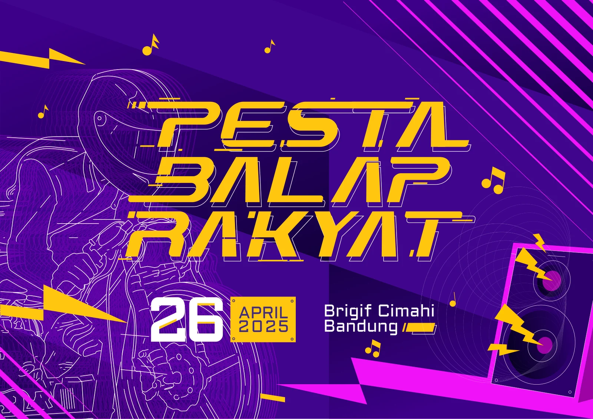
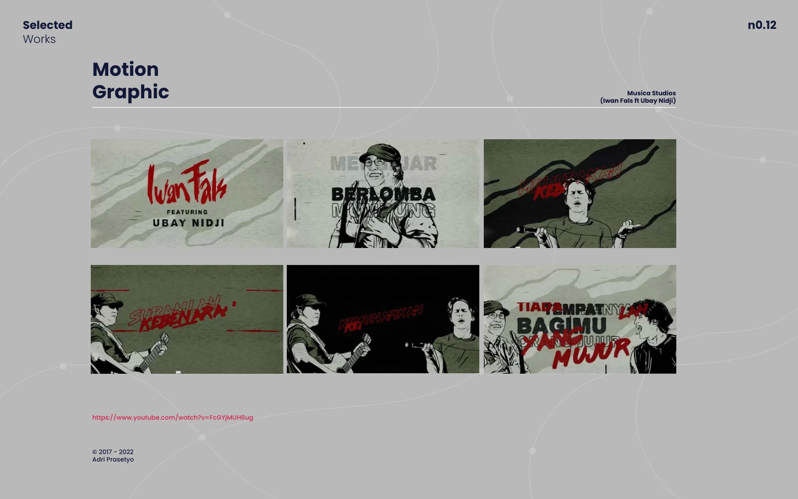

GRAPHIC & MOTION DESIGNER
Mengubah ide menjadi identitas, visual, dan cerita yang bermakna bagi brand Anda.
Jelajahi karya 10+ tahun pengalaman desain
PILIHAN KARYA / VISUAL EVENT01 / PORTOFOLIO
Karya pilihan.
Temukan pendekatan visual yang sesuai dengan kebutuhan proyek Anda.
Karya tidak ditemukan. Coba kata kunci atau kategori lainnya.
02 / MOTION GRAPHIC
Visual yang
bergerak. Cerita
yang terasa.
Motion graphic video lirik Iwan Fals ft. Ubay Nidji, dalam portofolio Musica Studios.
Tonton di YouTube ↗
Saya Adri Prasetyo, Graphic & Motion Designer berbasis di Bandung dengan pengalaman lebih dari 10 tahun. Saya menggabungkan desain grafis, ilustrasi, dan gerak untuk membantu brand menyampaikan pesan dengan jelas dan konsisten.
Setiap proyek dimulai dari memahami tujuan, audiens, dan konteks penggunaannya. Dari identitas brand hingga visual event, saya mengembangkan desain yang relevan dan siap diaplikasikan di berbagai media.
Graphic, Motion & Experience Design
Motion graphic & animasi video lirik
04 / MULAI PERCAKAPAN
Punya ide?
Mari wujudkan bersama.
Ceritakan kebutuhan, ruang lingkup, dan jadwal proyek Anda. Mari temukan pendekatan visual yang tepat.
Diskusikan via WhatsApp ↗